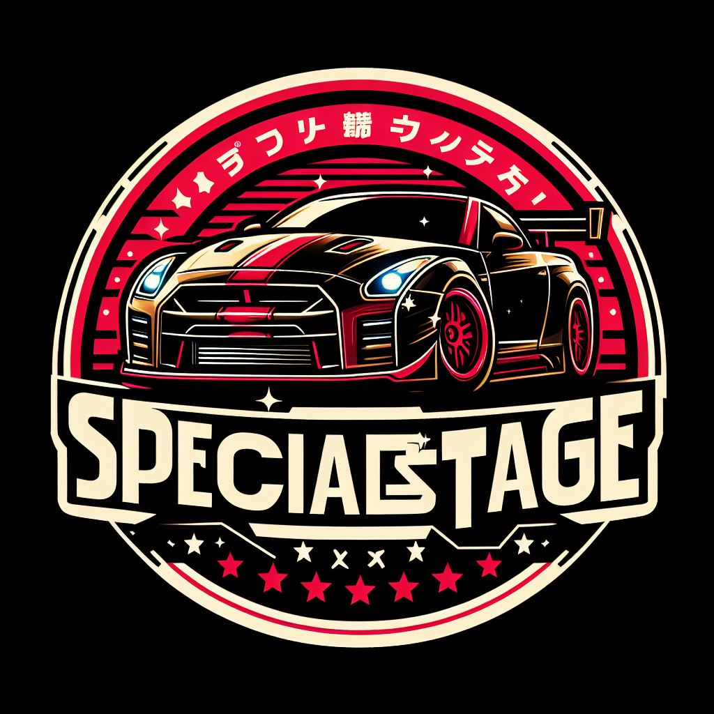
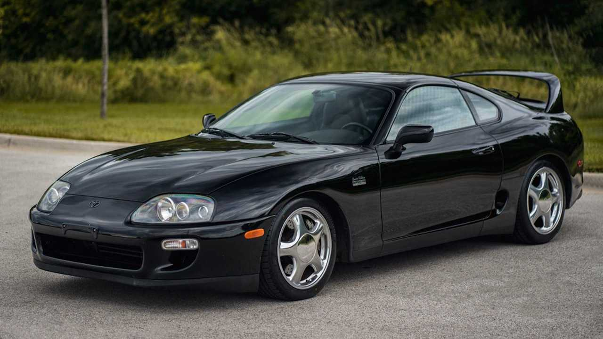
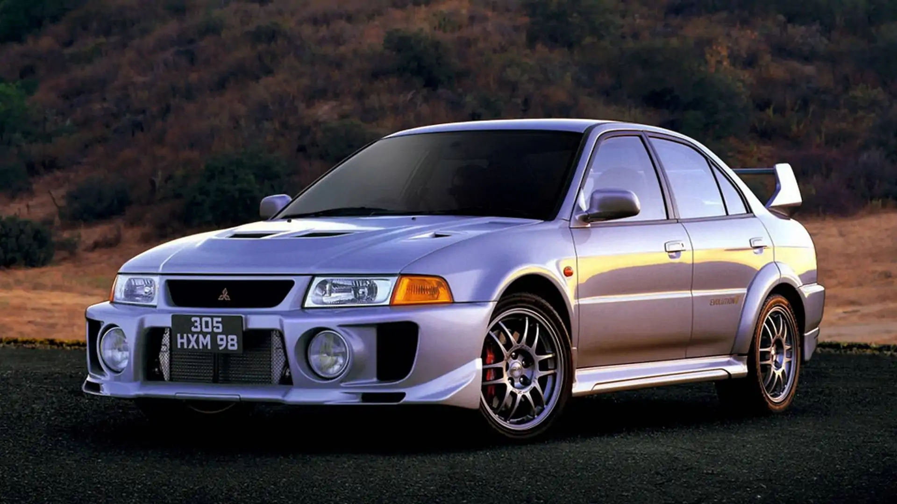
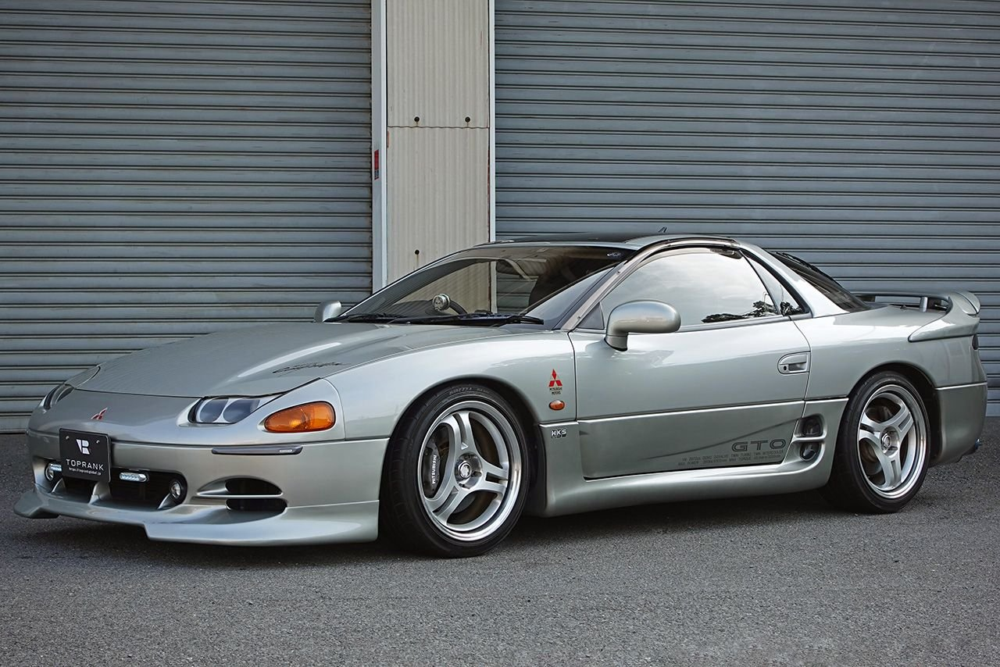
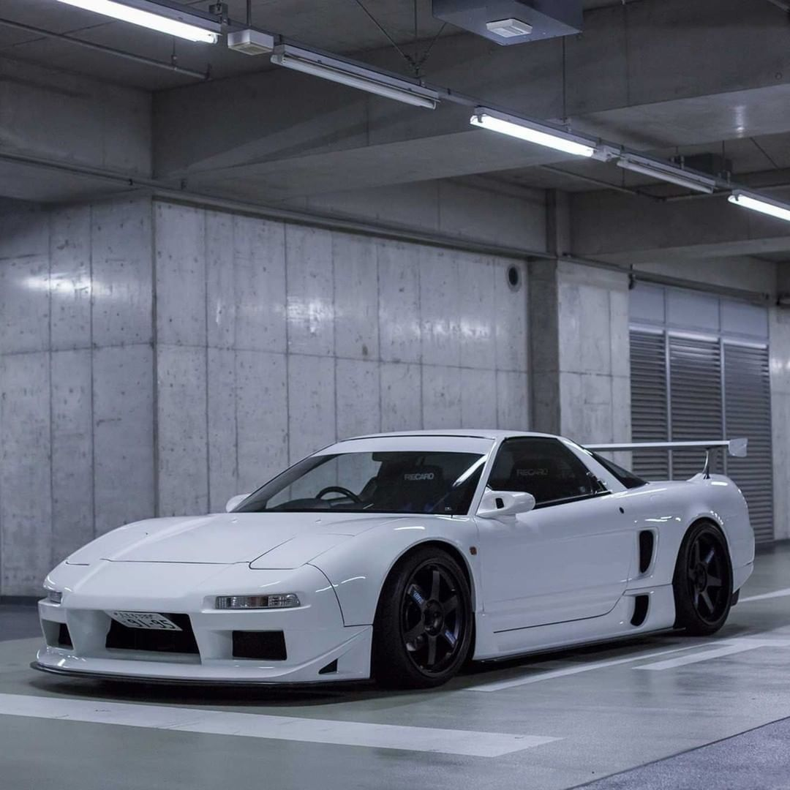
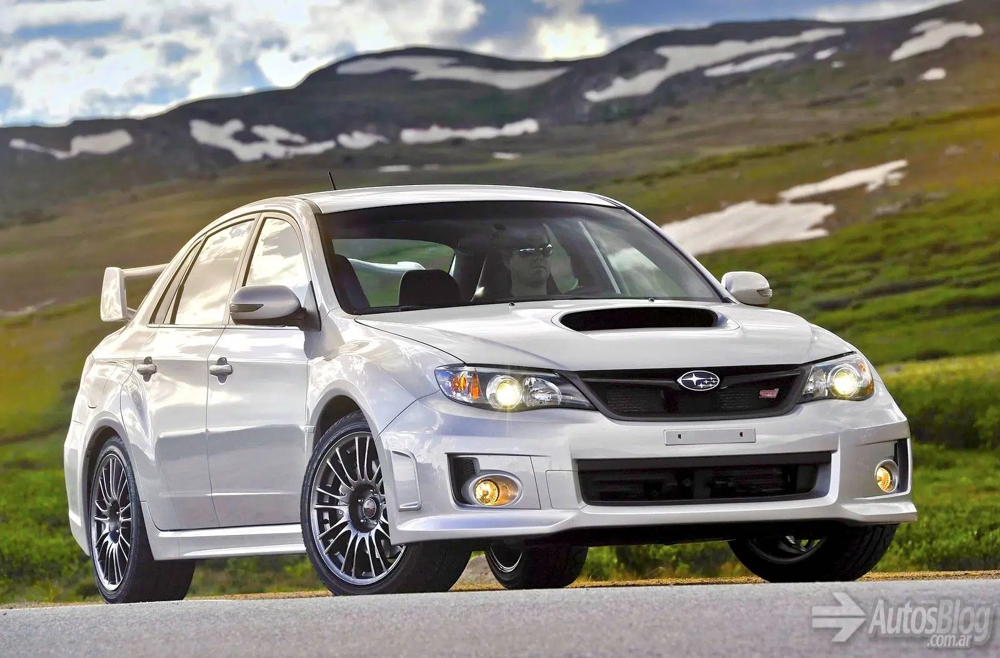
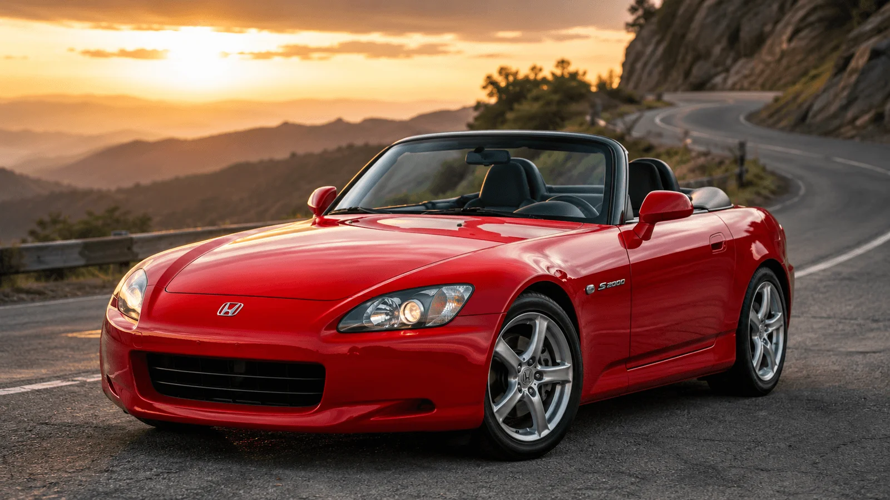

ÍCONOS DE JAPÓN · 01 / 14
LA NOCHE
ES NUESTRA.
Ingeniería sin concesiones. Una cultura que nació en la calle y nunca dejó de acelerar.
Descubre el garage
SPECIALSTAGE
ÍCONOS DE JAPÓN · 01 / 14
Ingeniería sin concesiones. Una cultura que nació en la calle y nunca dejó de acelerar.
Descubre el garage
LEYENDAS DEL ASFALTO · 02 / 14
Un nombre que atraviesa generaciones. El Supra siempre encuentra el camino de vuelta.
Descubre el garage
NACIDO EN EL RALLY · 03 / 14
Tracción total, carácter de competición y una máquina hecha para ir más allá.
Descubre el garage
POTENCIA DE LOS 90 · 04 / 14
Tecnología, turbo y diseño atrevido: el gran turismo que hizo historia.
Descubre el garage
PRECISIÓN EN ESTADO PURO · 05 / 14
Equilibrio, precisión y alma de competición en un superdeportivo inolvidable.
Descubre el garage
ADN DE RALLY · 06 / 14
Boxer turbo, tracción total y el carácter competitivo que conquistó el WRC.
Descubre el garage
ROADSTER PURO · 07 / 14
Propulsión trasera y un motor atmosférico diseñado para disfrutar cada revolución.
Descubre el garageTECNOLOGÍA ROTATIVA · 08 / 14
Un diseño liviano y el exclusivo motor Wankel dieron forma a una leyenda.
Descubre el garageREINA DE LOS TOUGE · 09 / 14
Ligereza, propulsión trasera y equilibrio para convertir cada curva en expresión.
Descubre el garageLEYENDA HACHI-ROKU · 10 / 14
Ligero, sincero y famoso por llevar el automóvil al límite de la carretera de montaña.
Descubre el garageEL HERMANO INVISIBLE · 11 / 14
El Corolla Levin comparte la esencia del AE86 con faros fijos y carácter compacto.
Descubre el garageNATIVO DE CIRCUITO · 12 / 14
Motor atmosférico, precisión de chasis y toda la filosofía Honda Type R.
Descubre el garageLEYENDA VTEC · 13 / 14
Ligereza, altas revoluciones y una dirección que convirtió al Integra en una leyenda.
Descubre el garagePOTENCIA LEGENDARIA · 14 / 14
El 2JZ turbo convirtió al Supra en un referente eterno de potencia y preparación.
Descubre el garageCURADURÍA SPECIAL STAGE
Máquinas que definieron una era. Historias que siguen vivas cada vez que giras la llave.
TOYOTA · GRAN TURISMO
Una leyenda de tracción trasera, hecha para ir más allá.
MITSUBISHI · RALLY
ADN de competición con carácter para cada camino.
MITSUBISHI · TWIN TURBO
Tecnología y potencia en clave gran turismo.
04NISSAN · SUPERCOCHE
El superdeportivo japonés que convirtió la ingeniería en leyenda.
HONDA · MOTOR CENTRAL
Precisión artesanal y equilibrio para redefinir el superdeportivo.
TOYOTA · TURBO LEGENDARIO
Potencia, afinación y una plataforma icónica de los años noventa.
SUBARU · RALLY LEGENDARIO
Tracción total, boxer turbo y ADN nacido en los escenarios del WRC.
HONDA · ROADSTER PURO
Propulsión trasera, caja manual corta y un motor que alcanzaba las altas revoluciones.
MAZDA · ROTATIVO
Ligero, ágil y impulsado por el exclusivo motor rotativo Wankel.
NISSAN · DEPORTIVO DEL SUEÑO
Chasis ligero, propulsión trasera y diseño aerodinámico para dominar los touge.
TOYOTA · LEYENDA HACHI-ROKU
Ligero y ágil, famoso por el drifting y los recorridos nocturnos por montaña.
TOYOTA · COUPÉ AERODINÁMICO
La otra identidad del AE86: igual alma deportiva, faros fijos y carácter puro.
HONDA · TYPE R
Motor atmosférico, precisión de chasis y el espíritu japonés de la pista.
HONDA · TYPE R
Ligereza, VTEC y una dirección legendaria entre los compactos deportivos.
MÁS QUE AUTOMÓVILES
JDM no es solo una sigla. Es respeto por el detalle, pasión por la máquina y una comunidad unida por la carretera. Desde los puertos de montaña hasta las luces de la ciudad, cada auto tiene una historia que merece ser contada.
Conoce nuestras leyendas